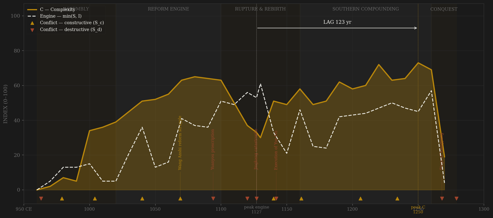
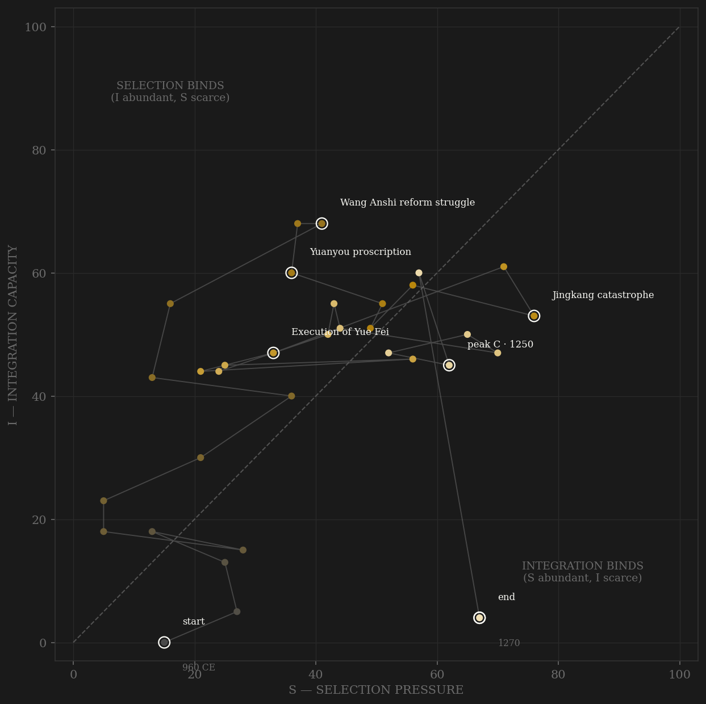

Song is the constructive-selection showcase. The founder demobilized his generals over a cup of wine and built the fullest examination meritocracy in the premodern world — 35,111 exam entries and 28,859 jinshi degrees sit in the Harvard biographical database, measured, not scored. The engine peaks in the 1070s–80s: Wang Anshi's fiscal state, an iron industry Hartwell estimated at levels Europe would not reach for centuries, paper money circulating. Complexity keeps compounding for another 150 years — through the loss of the entire north in 1127 — peaking in the Southern Song 1220s–50s, the densest commercial economy of the medieval world. The lag sits at the very edge of the preregistered window. Then the one rival the system could not price: the Mongols, three decades of grinding conquest from Xiangyang to the drowned court at Yamen.

The trajectory is the inverse of Rome's: it enters low on both axes after the Five Dynasties collapse and climbs the integration axis almost vertically — the civil-service state assembling itself. It crosses the diagonal early and spends the dynasty's whole life in the selection-binds region: Song never lacked coordination; it lacked pressure it could answer. Jingkang (1127) knocks the path sideways but does not reset it — the state reassembles in the south at nearly full integration, the clearest demonstration of the memory term ρ·C_mem in the sample. The terminal slide is compressed: integration holds into the 1260s, then the archive itself thins as the state dissolves.
Coded by locus and target, never by outcome. The Song ledger makes a point no other polity makes as cleanly: destructive selection does not require blood. The violent-succession rate was 0.11–0.22 — the lowest of any major dynasty — yet S_d runs through the ledger as factional proscription: the Yuanyou blacklists, Qin Gui's purge of the war party, careers destroyed by edict rather than execution. The CBDB punishment events spike precisely on these cycles without being told where they were. Violence against coordination machinery counts the same whether the instrument is a sword or a signature.
| YEAR | CONFLICT | CODE | CODING RATIONALE |
|---|---|---|---|
| 963 CE | Unification of the south | Sd | Internal contest for the collapsed Five Dynasties order; founding violence |
| 979 CE | Liao wars (Gaoliang River) | Sc | External peer rivalry; the northern frontier discipline begins |
| 1004 | Chanyuan campaign | Sc | External; settled by treaty — rivalry priced into annual payments |
| 1040 | Xi Xia wars | Sc | External frontier competition; drove Fan Zhongyan's reforms |
| 1069 | Wang Anshi reform struggle | Sc | Contest fought inside institutions — policy, not proscription; the constructive peak |
| 1094 | Yuanyou proscription | Sd | Factional blacklists; careers destroyed by edict — bloodless S_d, CBDB spike validates blind |
| 1120 | Fang La rebellion | Sd | Internal rising in the commercial heartland |
| 1127 | Jingkang catastrophe | Sd | Jin sack of Kaifeng, both emperors captured — external origin, total core penetration |
| 1140 | Jin wars / Yue Fei | Sc | Defensive frontier war by a functioning southern state |
| 1142 | Execution of Yue Fei | Sd | Qin Gui's purge of the war party; the state destroying its own command |
| 1161 | Caishi (Jin invasion repelled) | Sc | External invasion broken at the river frontier; core untouched |
| 1206 | Kaixi war | Sc | External; failed northern offensive |
| 1234 | Fall of Jin (Mongol alliance) | Sc | External geopolitics; removes the buffer state |
| 1268 | Siege of Xiangyang | Sd | Core penetration begins: five years, the gate to the Yangzi |
| 1279 | Yamen | Sd | Terminal: the court drowns with the boy emperor |
| COMPONENT | GRADE | BASIS |
|---|---|---|
| S — Selection | ◐ corpus + coded | CBDB 35,111 exam entries (measured S_c); war-years hand-coded from Lorge 2005, CHC v.5, Kuhn 2009 |
| S_d — Destructive | ◐ event-measured | CBDB 139 dated punishment events — spikes land on Yuanyou and Qin Gui cycles blind; succession file 0.11–0.22 (lowest of major dynasties) |
| I — Integration | ◐ corpus-measured | CBDB 34,824 dated appointments (bureaucratic throughput); fiscal revenue 997–1260; coinage 976–1257 |
| C — Complexity | ◐ measured + partial | 28,859 jinshi degrees, Hartwell iron output (trajectory robust, levels contested), urbanization, Maddison GDPpc (Northern Song only — NaN after 1130, never imputed) |
| E — Entropy | ◐ measured | Von Glahn paper-money hyperinflation (log₁₀), CBDB punishment cycles |
33 decade rows built from local corpora by scripts/build_song_sicre.py; audit trail in components_raw.csv; all normalization within-dynasty per the CBDB density caveat. Known issues flagged in SOURCES.md: 1160–1234 population anchors cover combined Song+Jin territory; the 1270s integration collapse is partly archival thinning. Rebuild: build_song_sicre.py, then polity_report.py --slug song